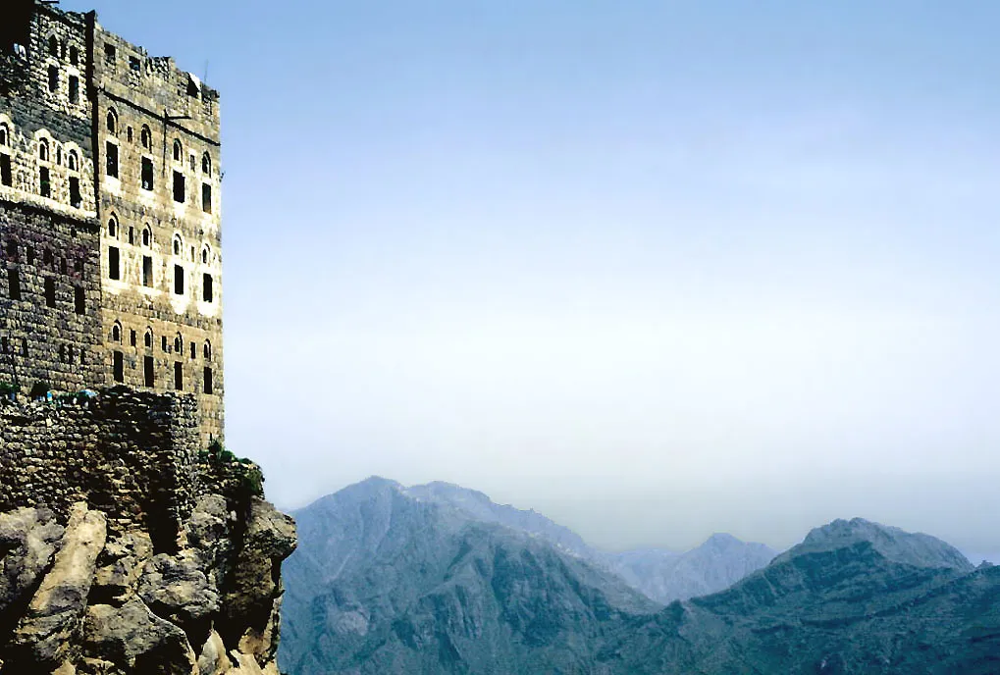
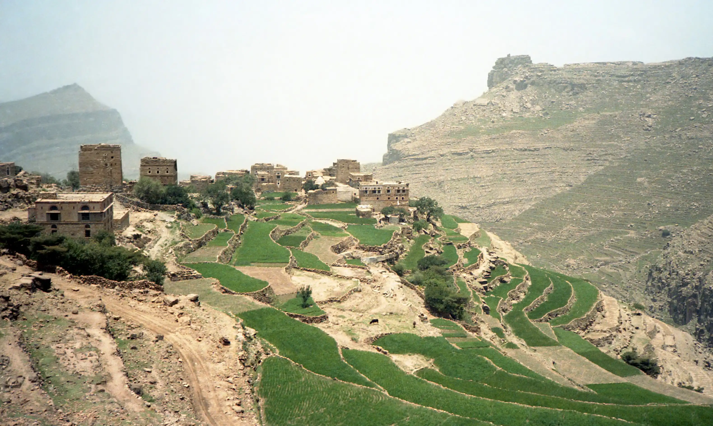

Tawzan: A Hamdani Village in Bani Makram, Sana'a
Tawzan is a Yemeni village in Hamdan District, Sana'a Governorate, part of the Bani Makram sub-district. It lies within the territory of the ancient Qahtanite tribe of Hamdan, one of the oldest and most distinguished tribal confederations in Yemen.

Image: Wikimedia Commons (CC BY-SA 4.0)
Geography
Tawzan is located in Sana'a Governorate, Hamdan District, Bani Makram sub-district. It lies a few kilometres northwest of Sana'a city, in the central highlands that characterise the Hamdan region.
Administrative Hierarchy
- Country: Yemen
- Governorate: Sana'a
- District: Hamdan
- Sub-district: Bani Makram
- Village: Tawzan
Etymology
The name "Tawzan" carries authentic Yemeni character, rooted in Hamdani tribal origins. The toponym is tied to the history of the Hamdan tribe and its Bani Makram branch.
Historical & Tribal Context
Hamdan Genealogy
According to classical Arabic and Islamic historical sources, the Hamdan tribe traces its lineage to:
Hamdan ibn Zayd ibn Awsala ibn Rabi'a ibn al-Khiyar ibn Malik ibn Zayd ibn Kahlan ibn Saba'
The word "Hamdan" in the Yemeni Arabic dialect connotes great number and stature.
Traditional Divisions
Traditionally, Hamdan is divided into four agricultural-tribal quarters (rubu'):
- Bani Makram — includes many villages, among them Tawzan
- Al-Rubu' — the second quarter of Hamdan
- Wada'a — areas of the Wada'i tribes
- Mixed with Bakil — historical intermingling with Bakil tribes
The Two Main Branches
Hashid — the most politically influential tribal confederation in modern Yemen. Its paramount sheikh is Sheikh Miran bin Abdullah al-Ahmar (succeeding Sheikh Sadiq al-Ahmar). Earliest historical mention: 4th century BCE.
Bakil — the largest tribal confederation in Yemen. Branches include Arhab, Murahba, Nihm, and Shakir. Historically led by the Abu Lahum / Al Sinan families.
Bani Makram — a part of Hamdan, home to Tawzan. It encompasses approximately 98–100 villages and hamlets, with a population of about 111,142.
Historical Significance of Tawzan
Tawzan contains the Tawzan Hall, a tribal meeting venue used for events and gatherings. It has served as a centre for tribal and cultural activities in Hamdan District.
Notable figures from Tawzan have held academic, religious, and tribal positions. Several prominent Hamdani scholars have hailed from this area.
Demographics
2004 Official Census: Total population 2,012 (males 1,055, females 957) — households: 190 — housing units: 197
2014 Estimate: Total population 2,703 (males 1,417, females 1,286) — households: 255 — housing units: 264
Daily Life & Culture
- Agriculture: The area relies heavily on traditional mountain farming
- Water: Known for its traditional circular water cisterns distinctive to Yemeni highlands
- Language: Central Yemeni dialect
- Religion: Hamdan's population is predominantly Shafi'i Sunni and Zaydi Shia
Architecture
Traditional Yemeni architecture in Tawzan features circular water cisterns (similar to those found across Hamdan District), locally quarried stone masonry, and mountain-adapted house designs.

Image: Wikimedia Commons (CC BY-SA 3.0)
Historical Dynasties
The Zaydi Imamate: Hamdan was a key pillar of the Zaydi Imamate in Sana'a. Hashid and Bakil sheikhs were known for their strong political role.
The Sulayhid Dynasty: Founded by the Sulayhi family of Hamdani origin in the 5th century CE. It was the first state to unite Yemen under one rule after Islam.
The Rasulid Dynasty: Controlled Hamdan and large parts of Yemen.
Contemporary Challenges
Civil War and Instability: Since 2015, Hamdan has been significantly affected by the conflict. Various sheikhs and tribes have taken different positions, and some areas have experienced tribal clashes.
Economic Challenges: Weak public services, youth migration to cities, and water scarcity.
Conclusion
Tawzan is not merely one village among many in Hamdan — it is a microcosm of Hamdan's ancient history. Understanding its origins and culture reveals how the Hamdan tribes (Hashid, Bakil, and Bani Makram) have shaped, and continue to shape, the social and political fabric of Yemen.
The interplay of ancient history and contemporary reality makes Tawzan a starting point for understanding the deep relationship between Yemeni tribes and the land, between past and future.
Sources
- Wikipedia: Tawzan (Hamdan)
- Wikipedia: Hamdan District
- Kitab Majmu' Buldan al-Yaman wa Qaba'iliha (al-Hajri)
- Al Jazeera: Encyclopedia of Yemeni Tribes
- Sana'a Center for Strategic Studies
This article was prepared by a researcher in Yemeni history and tribes. Information was gathered from multiple local and international sources. Last updated: June 2026.